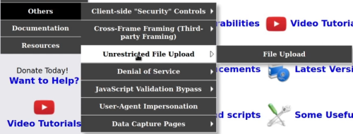
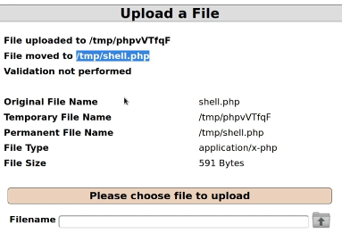
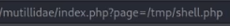
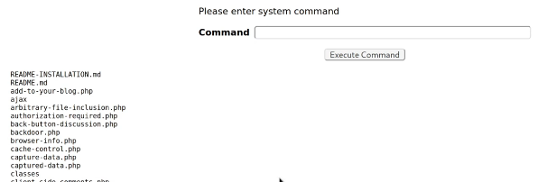

Probablemente esta sea la vulnerabilidad que más fácilmente nos permite comprometer una máquina objetivo.
Anteriormente se conocia como local file inclusion porque existia otra técnica asociada llamada remote file inclusion aunque esta ha ido desapareciendo debidoo a que solo se podía utilizar con php.
Esta vulnerabilidad la aprovechamos en una aplicación web que nos permita subir ficheros para subir una remote webshell.

Subimos la webshell:

Pegamos la dirección en la url:

